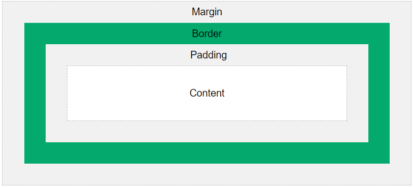
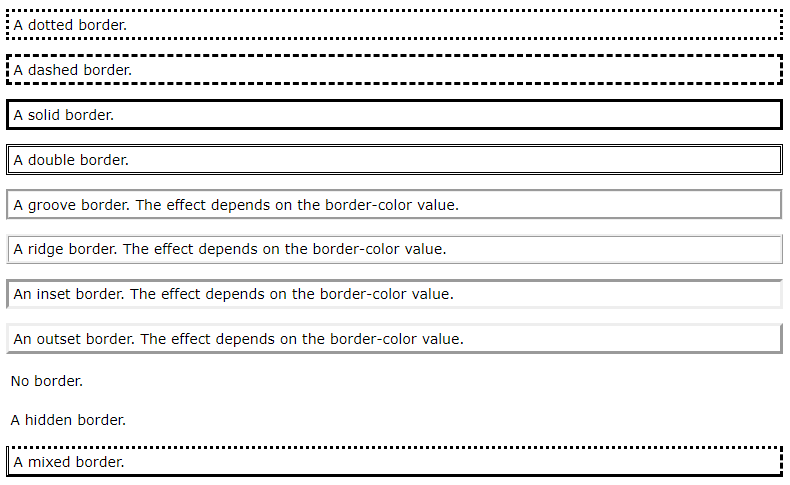
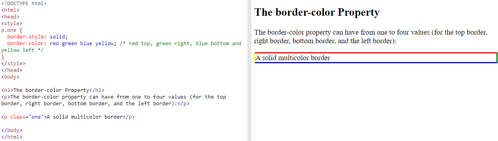
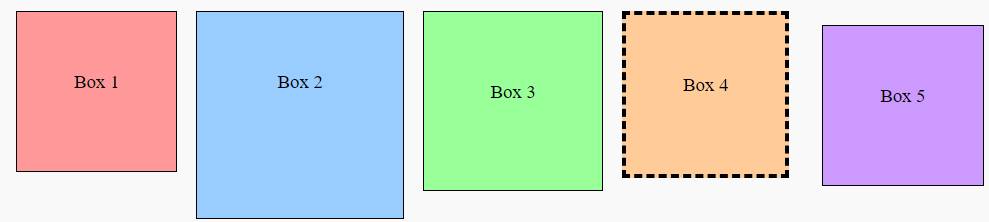
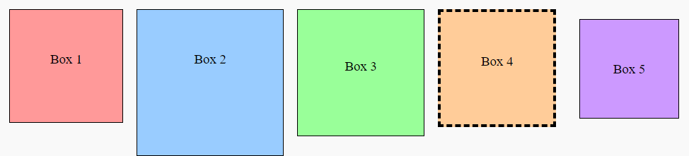

4. CSS Box Model#
4.1. The CSS Box Model#
In CSS, the term
box modelis used when talking about design and layout.The
CSS box modelis essentially a box that wraps around every HTML element. It consists of:content,padding,bordersandmargins. The image below illustrates the box model:
Explanation of the different parts:
Content- The content of the box, where text and images appearPadding- Clears an area around thecontent. Thepaddingis transparentBorder- A border that goes around the padding and contentMargin- Clears an area outside theborder. The margin is transparent
The
box modelallows us to add aborderaround elements, and to define space between elements.div { width: 300px; border: 15px solid green; padding: 50px; margin: 20px; }
4.2. Width and Height of an Element#
Example: This
<div>element will have a total width of 350px and a total height of 80px:div { width: 320px; height: 50px; padding: 10px; border: 5px solid gray; margin: 0; }
Calculation
Total element width = width + left padding + right padding + left border + right border
Total element height = height + top padding + bottom padding + top border + bottom border
320px (width of content area) + 20px (left padding + right padding) + 10px (left border + right border) = 350px (total width) 50px (height of content area) + 20px (top padding + bottom padding) + 10px (top border + bottom border) = 80px (total height)
4.3. CSS Borders#
The
CSS borderproperties allow you to specify thestyle,width, andcolorof an element’s border.-
Property
Description
borderSets all the border properties in one declaration
border-bottomSets all the bottom border properties in one declaration
border-bottom-colorSets the color of the bottom border
border-bottom-styleSets the style of the bottom border
border-bottom-widthSets the width of the bottom border
border-colorSets the color of the four borders
border-leftSets all the left border properties in one declaration
border-left-colorSets the color of the left border
border-left-styleSets the style of the left border
border-left-widthSets the width of the left border
border-radiusSets all the four
border-*-radiusproperties for rounded cornersborder-rightSets all the right border properties in one declaration
border-right-colorSets the color of the right border
border-right-styleSets the style of the right border
border-right-widthSets the width of the right border
border-styleSets the style of the four borders
border-topSets all the top border properties in one declaration
border-top-colorSets the color of the top border
border-top-styleSets the style of the top border
border-top-widthSets the width of the top border
border-widthSets the width of the four borders
4.3.1. CSS Border Style#
The border-style property specifies what kind of border to display.
The following values are allowed:
dotted- Defines a dotted borderdashed- Defines a dashed bordersolid- Defines a solid borderdouble- Defines a double bordergroove- Defines a 3D grooved border. The effect depends on the border-color valueridge- Defines a 3D ridged border. The effect depends on the border-color valueinset- Defines a 3D inset border. The effect depends on the border-color valueoutset- Defines a 3D outset border. The effect depends on the border-color valuenone- Defines no borderhidden- Defines a hidden border
The border-style property can have from one to four values (for the top border, right border, bottom border, and the left border).
Example
p.dotted {border-style: dotted;} p.dashed {border-style: dashed;} p.solid {border-style: solid;} p.double {border-style: double;} p.groove {border-style: groove;} p.ridge {border-style: ridge;} p.inset {border-style: inset;} p.outset {border-style: outset;} p.none {border-style: none;} p.hidden {border-style: hidden;} p.mix {border-style: dotted dashed solid double;}
Result

4.3.2. CSS Border Color#
The border-color property is used to set the color of the four borders.
The color can be set by:
name - specify a color name, like “red”
HEX - specify a HEX value, like “#ff0000”
RGB - specify a RGB value, like “rgb(255,0,0)”
HSL - specify a HSL value, like “hsl(0, 100%, 50%)”
transparent
Specific Side Colors
The
border-colorproperty can have from one to four values (for thetop border,right border,bottom border, and theleft border)

4.3.3. CSS Border - Shorthand Property#
There are many properties to consider when dealing with borders, to shorten the code, it is also possible to specify all the individual border properties in one property.
The border property is a shorthand property for the following individual border properties:
border-widthborder-style(required)border-color
Example
p {
border-bottom: 6px solid red;
}
Result

4.3.4. CSS Rounded Borders#
The
border-radiusproperty is used to add rounded borders to an element:
4.4. CSS Margins#
The
CSS marginproperties are used to create space around elements, outside of any definedborders.There are properties for setting the margin for each side of an element (
top,right,bottom, andleft).Property
Description
marginA shorthand property for setting all the margin properties in one declaration
margin-bottomSets the bottom margin of an element
margin-leftSets the left margin of an element
margin-rightSets the right margin of an element
margin-topSets the top margin of an element
4.4.1. Value setting#
All the margin properties can have the following values:
auto- the browser calculates themarginlength- specifies amargininpx,pt,cm, etc.%- specifies a margin in % of the width of the containing elementinherit- specifies that the margin should be inherited from the parent element
4.4.2. Margin - Shorthand Property#
If the margin property has four values:
p { margin: 25px 50px 75px 100px; } // top margin is 25px // right margin is 50px // bottom margin is 75px // left margin is 100px
If the margin property has three values:
p { margin: 25px 50px 75px; } // top margin is 25px // right and left margins are 50px // bottom margin is 75px
If the margin property has two values:
p { margin: 25px 50px; } // top and bottom margins are 25px // right and left margins are 50px
4.5. CSS Padding#
Paddingis used to create space around an element’s content, inside of any definedborders.It’s very similar to
Margin-
Property
Description
paddingA shorthand property for setting all the padding properties in one declaration
padding-bottomSets the bottom padding of an element
padding-leftSets the left padding of an element
padding-rightSets the right padding of an element
padding-topSets the top padding of an element
4.6. Length Unit#
4.6.1. Absolute Length Units#
Unit Name |
Introduction |
Example |
|---|---|---|
|
A pixel is the smallest unit of measure on the screen. The exact size can vary depending on the device’s resolution and pixel density. |
|
|
A point is equivalent to 1/72 of an inch, commonly used in print media. |
|
|
Centimeters represent a physical measurement, often used for print stylesheets. |
|
|
Millimeters are another physical measurement unit, used less frequently than centimeters. |
|
|
An inch is equivalent to 2.54 cm or 96 pixels on screens with a 96 DPI resolution. |
|
|
A pica is equivalent to 12 points, commonly used in print media. |
|
|
A quarter-millimeter, primarily used in East Asian typography. |
|
4.6.2. Relative Length Units Table#
Unit Name |
Introduction |
Example |
|---|---|---|
|
Relative to the font-size of the element. If not specified, it inherits from the parent. |
|
|
Relative to the font-size of the root element ( |
|
|
Relative to the x-height of the current font (the height of the lowercase letter ‘x’). |
|
|
Relative to the width of the ‘0’ (zero) character in the current font. |
|
|
Relative to 1% of the viewport’s width. Useful for responsive designs. |
|
|
Relative to 1% of the viewport’s height. |
|
|
Relative to 1% of the smaller dimension (width or height) of the viewport. |
|
|
Relative to 1% of the larger dimension (width or height) of the viewport. |
|
|
Relative to the parent element’s dimension. Commonly used for responsive layouts. |
|
4.7. Task#
4.7.1. Objective:#
Understand and apply the
CSS box modelto create a webpage with multiple boxes.Learn how to use properties like
width,height,padding,border, andmargin.Explore the
box-sizingproperty to control the size of boxes.
4.7.2. Set Up the HTML Structure#
Create a simple HTML file with the following structure
<!DOCTYPE html> <html lang="en"> <head> <meta charset="UTF-8"> <meta name="viewport" content="width=device-width, initial-scale=1.0"> <title>CSS Box Model Task</title> <link rel="stylesheet" href="./02-box-style.css"> </head> <body> <div class="box box1">Box 1</div> <div class="box box2">Box 2</div> <div class="box box3">Box 3</div> <div class="box box4">Box 4</div> <div class="box box5">Box 5</div> </body> </html>
4.7.3. Style the Boxes Using Box Model Properties:#
Use the box model properties to adjust the size and position of the boxes.

4.7.4. Apply the box-sizing Property:#
Box Sizing |
Description |
Width Calculation |
Height Calculation |
Example |
|---|---|---|---|---|
|
Width and height include only the content. Padding and border are added outside the specified width and height. |
Content Width + Padding + Border |
Content Height + Padding + Border |
|
|
Width and height include content, padding, and border. The total size is the specified width and height. |
Total Width = Specified Width |
Total Height = Specified Height |
|
Use the
box-sizingproperty to control the box dimensions, including padding and borders.
4.7.5. Sample Script#
body {
display: flex;
flex-wrap: wrap;
gap: 10px; /* Gap between flex items */
padding: 20px;
background-color: #f9f9f9;
}
.box {
width: 150px; /* Content width */
height: 150px; /* Content height */
padding: 10px; /* Inside the box */
border: 2px solid #000; /* Border width */
margin: 5px; /* Space outside the box */
text-align: center;
line-height: 130px; /* Adjusted based on height and padding */
background-color: #ddd;
}
/* Specific box styles */
.box1 {
background-color: #ff9999;
}
.box2 {
background-color: #99ccff;
width: 200px; /* Different content width */
height: 200px; /* Different content height */
}
.box3 {
background-color: #99ff99;
padding: 20px; /* Different padding */
}
.box4 {
background-color: #ffcc99;
border-width: 5px; /* Different border width */
border-style: dashed; /* Dashed border style */
}
.box5 {
background-color: #cc99ff;
margin: 20px; /* Different margin */
box-sizing: border-box; /* Border-box sizing */
}